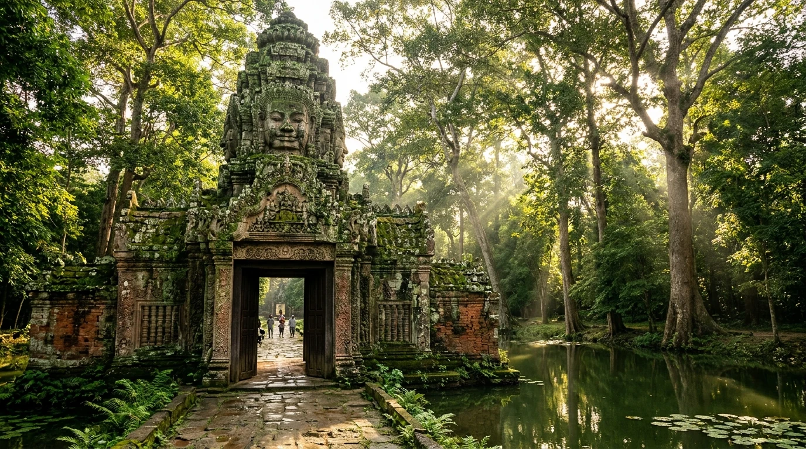

🧭 1. Tổng Quan Chùa Âng — Viên Ngọc Cổ Kính Của Văn Hóa Khmer Nam Bộ
Theo truyền thuyết và tư liệu lưu giữ tại chùa, tiền thân của Wat Angkorajaborey được hình thành từ khoảng năm 990 (cuối thế kỷ X). Đến năm 1695 và đặc biệt là đợt đại trùng tu năm 1842, ngôi Chánh điện được dựng lại bề thế bằng các loại gỗ quý, lợp ngói vảy cá và giữ gìn vẻ đẹp trầm mặc nguyên bản cho tới tận ngày nay. Năm 1994, Chùa Âng cùng thắng cảnh Ao Bà Om chính thức được xếp hạng Di tích cấp Quốc gia.
Khác với sắc màu rực rỡ hiện đại của nhiều ngôi chùa xây mới, Chùa Âng cuốn hút hành giả bởi vẻ cổ kính, rêu phong sâu lắng: khuôn viên rộng khoảng 4 ha có hào nước sâu bao bọc bốn phía tượng trưng cho biển vũ trụ bảo vệ núi Tu-di; cổng chùa mang hình tượng thần bốn mặt Bayon trầm tư; ngôi Chánh điện xây trên nền cao 2m với các bức phù điêu gỗ chạm rắn thần Naga, chim thần Krud, tiên nữ Kinnari và chằn Yeak tinh xảo bậc thầy. Mỗi dịp rằm tháng 10 Âm lịch, khu vực Chùa Âng – Ao Bà Om trở thành tâm điểm của Lễ hội Ok Om Bok (Cúng Trăng) thả đèn gió, đèn nước lung linh huyền ảo.
📜 2. Quy Chuẩn Hành Lễ & Bảo Vệ Rừng Cổ Thụ Ao Bà Om — Chùa Âng
Cụm di tích Chùa Âng – Ao Bà Om vừa là chốn tu hành tôn nghiêm của chư Tăng Nam tông Khmer vừa là lá phổi sinh thái quý giá với hàng trăm cây cổ thụ trăm tuổi:
🏮 3 Quy Chuẩn Khi Chiêm Bái Chùa Âng & Ao Bà Om
👘 Trang Phục Kín Đáo — Cởi Giày Dép Khi Vào Chánh Điện Gỗ Cổ
Mặc trang phục lịch sự, kín vai và dài qua gối; bắt buộc cởi giày dép bên ngoài bậc thềm trước khi bước vào ngôi Chánh điện gỗ cổ năm 1842.
🌳 Bảo Vệ Bộ Rễ Cây Cổ Thụ Trăm Tuổi Quanh Ao Bà Om
Không khắc chữ, không bẻ cành hay đốt lửa gần những bộ rễ cây sao, cây dầu trồi cao kỳ ảo quanh bờ Ao Bà Om và khuôn viên chùa.
🙏 Tôn Trọng Giới Luật Chư Tăng Nam Tông Khmer
Đi nhẹ nói khẽ trong giờ chư Tăng học kinh và tụng niệm; chào các vị sư bằng cử chỉ chắp tay búp sen trước ngực trang trọng.
⛩️ 3. Lộ Trình 6 Trạm Chiêm Bái Chùa Âng & Ao Bà Om (TP. Trà Vinh)
Lộ trình 6 trạm đưa hành giả qua Cổng Chùa khắc tượng Bayon và hào nước cổ, ngắm sân rừng sao dầu & vườn tháp cốt rêu phong, bước lên Chánh điện gỗ quý năm 1842 lễ Phật Thích Ca, thăm Giảng đường Sala & trường Pali của chư Tăng, dạo dưới những bộ rễ cổ thụ trăm năm bên bờ Ao Bà Om và hồi hướng trong không gian văn hóa Khmer.
Hành Trình Chiêm Bái Chùa Âng — Cổ Tự Ngàn Năm Bên Ao Bà Om
Chạm vào trầm tích lịch sử hơn một thiên niên kỷ của văn hóa Khmer Trà Vinh giữa rừng cổ thụ xanh mát.

Đón hành giả vào Chùa Âng là chiếc cầu bắc qua hào nước sâu phẳng lặng dài hơn 400m bao bọc quanh chùa và cánh cổng cổ kính chạm khắc tháp bốn mặt Bayon (Tứ Vô Lượng Tâm: Từ – Bi – Hỷ – Xả) ẩn hiện dưới vòm cây cổ thụ xanh rì.
🏛️ Ý Nghĩa Hào Nước & Tháp Bốn Mặt Cổng Chùa
- Hào nước rộng bao quanh khuôn viên 4 ha của Chùa Âng vừa bảo vệ chùa xưa, vừa biểu trưng cho đại dương bao quanh núi thiêng Tu-di trong vũ trụ quan Phật giáo.
- Đỉnh cổng đắp nổi bốn gương mặt hiền từ nhìn ra bốn phương, nhắc nhở người con Phật sống trọn vẹn bốn tâm rộng lớn Từ – Bi – Hỷ – Xả.
- Nét rêu phong trăm năm trên cổng gạch vữa mang vẻ đẹp trầm mặc hiếm thấy.
📿 Nghi Thức Khi Vào Chùa Âng
- Đi nhẹ nhàng, giữ giọng nói nhỏ nhẹ giữa rừng cây yên tĩnh.
- Gửi xe gọn gàng phía ngoài khu vực cổng theo chỉ dẫn.
- Chắp tay cúi chào nếu gặp chư Tăng đi khất thực hoặc tản bộ trong sân.
CHỨNG NHẬN CHIÊM BÁI CHÙA ÂNG TRÀ VINH VIÊN MÃN
Chúc mừng bạn đã hoàn thành trọn vẹn lộ trình chiêm bái 6 trạm tại Chùa Âng (Wat Angkorajaborey) & Ao Bà Om (Trà Vinh). Nguyện cầu Đức Phật Thích Ca gia hộ thân tâm an lạc, trí tuệ sáng suốt, gia đạo hạnh phúc.
🧭 4. Lịch Trình 1 Ngày Khám Phá Chùa Âng — Ao Bà Om — Bảo Tàng Khmer Trà Vinh
Trà Vinh được mệnh danh là "thành phố trong rừng xanh" với mật độ cây cổ thụ dày đặc và di sản văn hóa Việt – Khmer – Hoa giao hòa:
Buổi Sáng (07h30 – 11h00): 6 Trạm Chùa Âng — Ao Bà Om — Bảo Tàng Văn Hóa Khmer
- 07h30: Tản bộ dưới nắng sớm xuyên qua những gốc sao, dầu cổ thụ quanh Ao Bà Om.
- 08h30: Qua hào nước vào chiêm bái Chùa Âng (Angkorajaborey): cổng Bayon, Chánh điện gỗ cổ 1842, bích họa cuộc đời Đức Phật và vườn tháp.
- 10h00: Ghé Bảo tàng Văn hóa Dân tộc Khmer ngay đối diện chùa tìm hiểu trang phục, nhạc cụ ngũ âm và nghệ thuật sân khấu Dù Kê, Rô Băm.
Buổi Trưa (11h30 – 13h30): Ẩm Thực Đặc Sản Trà Vinh
Thưởng thức cơm chay thanh đạm hoặc đặc sản bún nước lèo Trà Vinh, bánh tét Trà Cuôn dẻo thơm và dừa sáp Cầu Kè mát lạnh.
Buổi Chiều (14h30 – 17h00): Chùa Hang (Kompong Chrây) — Nghệ Thuật Điêu Khắc Rễ Cây
- 14h30: Thăm Chùa Hang (Kompong Chrây) tại huyện Châu Thành (cách ~5km) với cổng chùa như hang động và xưởng điêu khắc gỗ rễ cây tinh xảo của các vị sư.
- 16h30: Dạo quanh các tuyến phố rợp bóng cây cổ thụ trung tâm TP. Trà Vinh trước khi trở về.